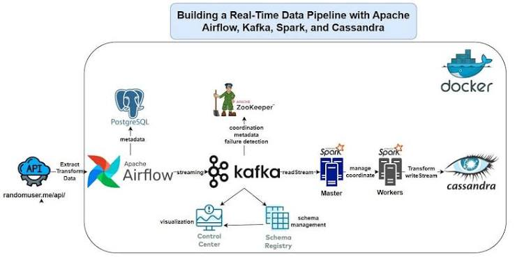

Projects
A selection of cloud, data, and machine learning projects that demonstrate practical problem solving, automation, and analytics.
Featured Work

BookStore End-to-End Development
A full-stack style project focused on building a complete bookstore workflow with clean structure, data handling, and user-friendly presentation.

Automated Data Upload to BigQuery
An automation project that moves data from one source to BigQuery for streamlined cloud analytics and reporting.

Streaming Data Analysis using Kafka
A real-time data streaming project built to capture, process, and analyze events using Kafka-based pipelines.
Project Highlights
Cloud Focus
Projects built around AWS, data pipelines, and automation workflows.
Portfolio Value
Each project is designed to show practical skills, documentation, and problem-solving ability for recruiters.